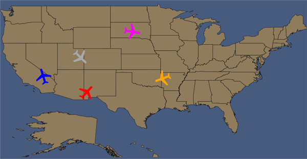

|
Name |
Data Type |
|
Latitude* |
Double |
|
Longitude* |
Double |
|
Text |
String |
|
Foreground |
Brush |
|
Background |
Brush |
|
FontStyle |
FontStyle |
|
FontFamily |
FontFamily |
|
FontSize |
Double |
|
LabelWidth |
Double |
|
Symbol* |
UIElement |
Note: Properties marked with * are mandatory.
To create a collection class
|
[C#] namespace SilverlightSampleBrowser {
using System; using System.Net; using System.Windows; using System.Windows.Controls; using System.Windows.Documents; using System.Windows.Ink; using System.Windows.Input; using System.Windows.Media; using System.Windows.Media.Animation; using System.Windows.Shapes; using System.Collections.ObjectModel;
public class SymbolCollection : ObservableCollection<MapsSymbol> { Path path; MapsSymbol symbol; public SymbolCollection() {
string pathXaml = "<Path xmlns=\"http://schemas.microsoft.com/winfx/2006/xaml/presentation\" xmlns:x=\"http://schemas.microsoft.com/winfx/2006/xaml\" Data=\"M24.002,20.7279L7.75067,30.0195L7.75067,33.8085L24.1192,28.608L24.0989,37.3815L24.5736,39.72L19.1172,43.0533L19.1491,45.8464L26.5436,43.6602L34.1217,45.7812L34.1283,43.1523L28.7019,39.6927L29.2981,37.3607L29.2721,28.6107L45.4968,33.5065L45.5052,29.7904L29.2995,20.7448L29.2721,10.1653C29.2721,10.1653 29.4753,7.56375 26.5957,7.41147C24.1712,7.78122 24.0377,9.26309 23.9421,10.1315C24.0937,10.2839 24.002,20.7279 24.002,20.7279z\"/>";
symbol = new MapsSymbol(); path = new Path(); path = (Path)System.Windows.Markup.XamlReader.Load(pathXaml); path.Fill = new SolidColorBrush(Colors.Blue); path.RenderTransform = new RotateTransform { Angle = -17 }; symbol.Latitude = 37.1280403137207; symbol.Longitude = -119.300537109375; symbol.Symbol = path; this.Add(symbol);
symbol = new MapsSymbol(); path = new Path(); path = (Path)System.Windows.Markup.XamlReader.Load(pathXaml); path.Fill = new SolidColorBrush(Colors.Red); path.RenderTransform = new RotateTransform { Angle = 42 }; symbol.Latitude = 35.646316528320312; symbol.Longitude = -108.69453430175781; symbol.Symbol = path; this.Add(symbol);
symbol = new MapsSymbol(); path = new Path(); path = (Path)System.Windows.Markup.XamlReader.Load(pathXaml); path.Fill = new SolidColorBrush(Colors.DarkGray); path.RenderTransform = new RotateTransform { Angle = 135 }; symbol.Latitude = 39.311626434326172; symbol.Longitude = -106.74490356445312; symbol.Symbol = path; this.Add(symbol);
symbol = new MapsSymbol(); path = new Path(); path = (Path)System.Windows.Markup.XamlReader.Load(pathXaml); path.Fill = new SolidColorBrush(Colors.Magenta); path.RenderTransform = new RotateTransform { Angle = 100 }; symbol.Latitude = 45.862396240234375; symbol.Longitude =-97.542633056640625; symbol.Symbol = path; this.Add(symbol);
symbol = new MapsSymbol(); path = new Path(); path = (Path)System.Windows.Markup.XamlReader.Load(pathXaml); path.Fill = new SolidColorBrush(Colors.Orange); path.RenderTransform = new RotateTransform { Angle = 250 }; symbol.Latitude = 32.682876586914063; symbol.Longitude =-95.437026977539063; symbol.Symbol = path; this.Add(symbol); }
} public class MapsSymbol { public double Latitude { get; set; } public double Longitude { get; set; } public string Text { get; set; } public object Symbol { get; set; } } } |
Add the Following code in Resource Dictionary
|
[Xaml] <!-- Local Refers the Namespace of the Project :- xmlns:local="clr-namespace:SilverlightSampleBrowser" -->
<local:SymbolCollection x:Key="sc"/> |
|
[Xaml] <!--syncfusion refers : xmlns:syncfusion="clr-namespace:Syncfusion.Windows.Controls.Map;assembly=Syncfusion.Maps.Silverlight" -->
<syncfusion:MapControl ShapeFill="#8f7c5c" Name="Map" LayeredContent="{Binding ElementName=shapeLayer}" > <syncfusion:MapControl.Layers> <syncfusion:Layers> <syncfusion:ShapeFileLayer SymbolSource=”{Binding Source={StaticResource sc}}” Uri="Maps.ShapeFiles.states.shp" x:Name="shapeLayer"/> </syncfusion:Layers> </syncfusion:MapControl.Layers> </syncfusion:MapControl> |
|
[C#] // Create a Instance for SymbolCollection class SymbolCollection symCollection = new SymbolCollection();
// Assign the object as Symbol Source of the Shape File Layer this.shapeLayer.SymbolSource = symCollection; |
